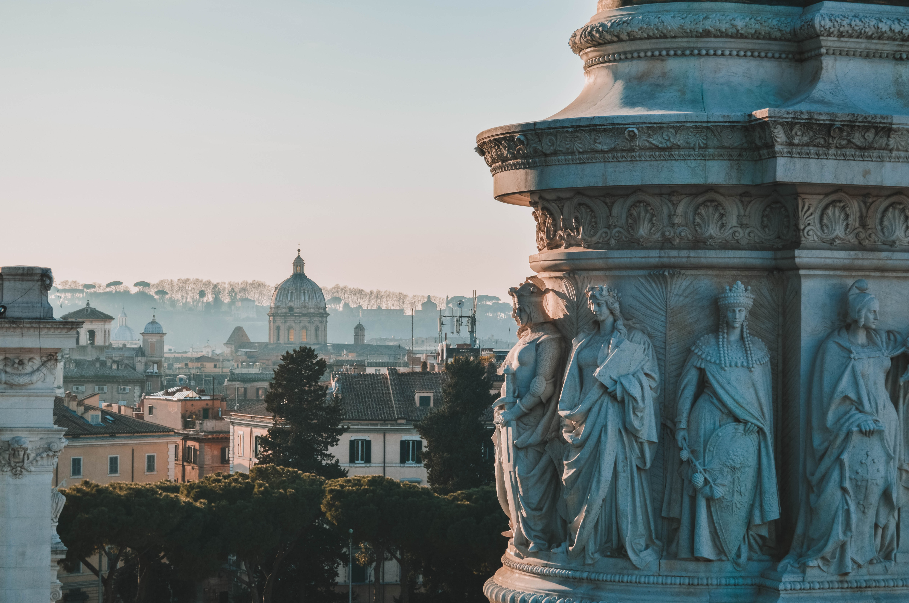
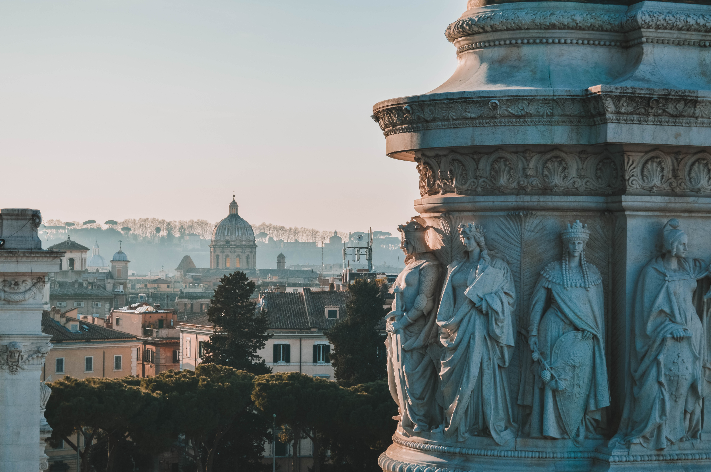
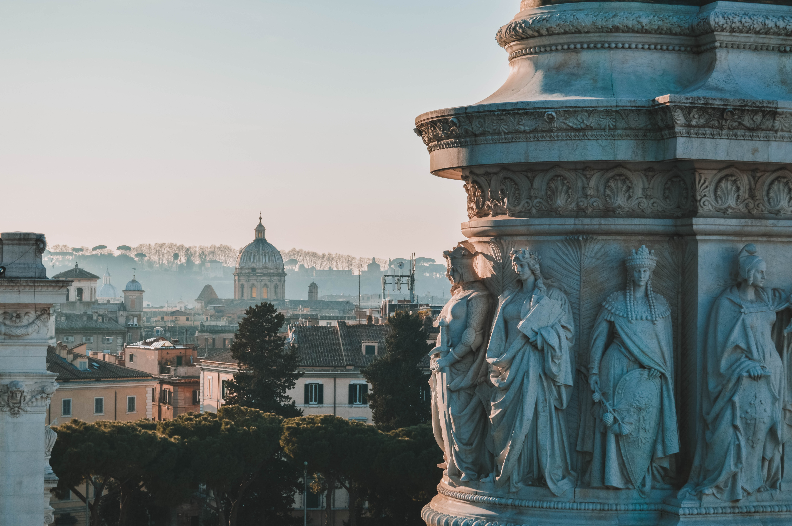

Look at these pictures, dude!
 


The Castel Sant'Angelo, or Castle of Angels, is a cylindrical building built by the Roman Emperor Hadrian as a mausoleum for himself and his family. Throughout the centuries, it has been used by popes as a fortress and a castle. It now stands as a museum on the western bank of the Tiber River, overlooking the Bridge of Angels.
Look at these pictures, dude!
